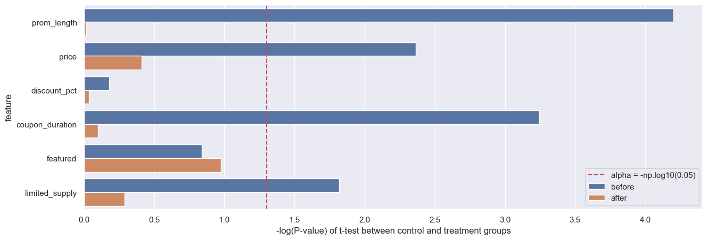

# load packages import numpy as np import pandas as pd import matplotlib.pyplot as plt import seaborn as sns import math import src.CasualInfer.casual_infer_utils as pu sns.set() # set the style
SETUP
A. Background:
Some Groupon deals have a minimal requirement, e.g., as shown in the picture above, the deal only works when there are at least 100 committed buyers.
Groups:
- Control group: deals without the minimal requirement
- Treatment group: deals with minimal requirement
B. Question at Hand
- Does having the minimal requirement affect the deal outcomes, such as revenue, quantity sold, and Facebook likes received?
C. Need for propensity matching
- Unequal distribution of Treatment in Outcomes
- High revenue and low revenue
- High Quantity sold vs Low Quantity sold
- High Facebook likes received vs Low Facebook likes received
D. Features to be used
What features to select: As we will illustrate later, the following features/variables should be excluded:
- features/variables that predict treatment status perfectly, such as min_req feature, which the treatment feature is directly derived from (see the code notebook for the result of adding min_req).
- features/variables that may be affected by the treatment
0.1. Read the groupon data
df = pd.read_csv('./data/groupon.csv')
df.info()
<class 'pandas.core.frame.DataFrame'>
RangeIndex: 710 entries, 0 to 709
Data columns (total 13 columns):
# Column Non-Null Count Dtype
--- ------ -------------- -----
0 deal_id 710 non-null object
1 start_date 710 non-null object
2 min_req 710 non-null int64
3 treatment 710 non-null int64
4 prom_length 710 non-null int64
5 price 710 non-null int64
6 discount_pct 710 non-null int64
7 coupon_duration 710 non-null int64
8 featured 710 non-null int64
9 limited_supply 710 non-null int64
10 fb_likes 710 non-null int64
11 quantity_sold 710 non-null int64
12 revenue 710 non-null int64
dtypes: int64(11), object(2)
memory usage: 72.2+ KB
0.2. Extract features to be used for propensity score matching
features_for_model = ['prom_length', 'price', 'discount_pct', 'coupon_duration', 'featured', 'limited_supply']
0.3. Initialize propensity modeling class for the data
pu_cls = pu.PropensityScoreAnalyzer(data=df, index='deal_id', features=features_for_model)
20/03//2024 01:29:1710921585 PM - DEBUG - PropensityScoreAnalyzer: Initialized PropensityScoreAnalyzer class
pu_cls.X
| prom_length | price | discount_pct | coupon_duration | featured | limited_supply | |
|---|---|---|---|---|---|---|
| 0 | 4 | 99 | 51 | 185 | 1 | 1 |
| 1 | 2 | 95 | 41 | 9 | 0 | 1 |
| 2 | 3 | 25 | 50 | 38 | 0 | 1 |
| 3 | 3 | 50 | 50 | 369 | 0 | 1 |
| 4 | 4 | 25 | 52 | 185 | 0 | 1 |
| ... | ... | ... | ... | ... | ... | ... |
| 705 | 5 | 45 | 54 | 164 | 0 | 1 |
| 706 | 8 | 149 | 67 | 52 | 0 | 1 |
| 707 | 4 | 159 | 60 | 29 | 0 | 1 |
| 708 | 4 | 19 | 51 | 187 | 0 | 1 |
| 709 | 3 | 28 | 53 | 99 | 0 | 1 |
710 rows × 6 columns
pu_cls.y
0 1
1 1
2 1
3 1
4 1
..
705 0
706 0
707 0
708 0
709 0
Name: treatment, Length: 710, dtype: int64
1.1 Data Exploration of distances
import pandas as pd import numpy as np import matplotlib.pyplot as plt import seaborn as sns import scipy.stats as stats import math from scipy.stats import ttest_ind from sklearn.model_selection import cross_val_score from sklearn.linear_model import LogisticRegression from sklearn.neighbors import NearestNeighbors
pu_cls_ps = pu_cls.calc_logistic_ps(pu_cls.X) pu_cls_ps.head()
20/03//2024 01:29:1710921586 PM - INFO - PropensityScoreAnalyzer.calc_logistic_ps: Calculating logistic regression based propensity score
/Users/abhilashdhal/Desktop/data_science_projects/Data-Science-with-Python/src/CasualInfer/casual_infer_utils.py:150: SettingWithCopyWarning:
A value is trying to be set on a copy of a slice from a DataFrame.
Try using .loc[row_indexer,col_indexer] = value instead
See the caveats in the documentation: https://pandas.pydata.org/pandas-docs/stable/user_guide/indexing.html#returning-a-view-versus-a-copy
df['ps'] = model.predict_proba(self.X)[:,1]
/Users/abhilashdhal/Desktop/data_science_projects/Data-Science-with-Python/src/CasualInfer/casual_infer_utils.py:151: SettingWithCopyWarning:
A value is trying to be set on a copy of a slice from a DataFrame.
Try using .loc[row_indexer,col_indexer] = value instead
See the caveats in the documentation: https://pandas.pydata.org/pandas-docs/stable/user_guide/indexing.html#returning-a-view-versus-a-copy
df['ps_logit'] = df.ps.apply(lambda x: self.logit(x))
| prom_length | price | discount_pct | coupon_duration | featured | limited_supply | ps | ps_logit | |
|---|---|---|---|---|---|---|---|---|
| 0 | 4 | 99 | 51 | 185 | 1 | 1 | 0.259192 | -1.050170 |
| 1 | 2 | 95 | 41 | 9 | 0 | 1 | 0.230198 | -1.207194 |
| 2 | 3 | 25 | 50 | 38 | 0 | 1 | 0.288405 | -0.903144 |
| 3 | 3 | 50 | 50 | 369 | 0 | 1 | 0.511781 | 0.047131 |
| 4 | 4 | 25 | 52 | 185 | 0 | 1 | 0.325212 | -0.729919 |
print(pu_cls.caliper)
20/03//2024 01:29:1710921587 PM - INFO - PropensityScoreAnalyzer.calc_logistic_ps: Calculating logistic regression based propensity score
0.03113485901968018
/opt/homebrew/anaconda3/envs/propensity/lib/python3.10/site-packages/sklearn/linear_model/_logistic.py:460: ConvergenceWarning: lbfgs failed to converge (status=1):
STOP: TOTAL NO. of ITERATIONS REACHED LIMIT.
Increase the number of iterations (max_iter) or scale the data as shown in:
https://scikit-learn.org/stable/modules/preprocessing.html
Please also refer to the documentation for alternative solver options:
https://scikit-learn.org/stable/modules/linear_model.html#logistic-regression
n_iter_i = _check_optimize_result(
knn = NearestNeighbors(n_neighbors=10, radius=pu_cls.caliper, algorithm='ball_tree') knn = knn.fit(pu_cls_ps[['ps']]) distances, indices = knn.kneighbors(pu_cls_ps[['ps']]) distances_plt = np.sort(distances, axis=0) distances_plt = distances[:,1]
plt.figure(figsize=(10,8))
ax = sns.histplot(distances_plt, kde=True, bins=200, color='blue')
ax.set_title('Nearest Neighbors Distance')
ax.set_xlabel('Distance')
/opt/homebrew/anaconda3/envs/propensity/lib/python3.10/site-packages/seaborn/_oldcore.py:1119: FutureWarning: use_inf_as_na option is deprecated and will be removed in a future version. Convert inf values to NaN before operating instead.
with pd.option_context('mode.use_inf_as_na', True):
Text(0.5, 0, 'Distance')

1.2. Perform matching
df_matched = pu_cls.make_matched_data()
20/03//2024 01:29:1710921589 PM - INFO - PropensityScoreAnalyzer.knn_matched: Starting KNN matching for propensity score calculation
20/03//2024 01:29:1710921589 PM - INFO - PropensityScoreAnalyzer.calc_logistic_ps: Calculating logistic regression based propensity score
total observations in treatment: 216
total matched observations in control: 171
20/03//2024 01:29:1710921589 PM - INFO - PropensityScoreAnalyzer.knn_matched: Finished KNN matching for propensity score calculation
/opt/homebrew/anaconda3/envs/propensity/lib/python3.10/site-packages/sklearn/linear_model/_logistic.py:460: ConvergenceWarning: lbfgs failed to converge (status=1):
STOP: TOTAL NO. of ITERATIONS REACHED LIMIT.
Increase the number of iterations (max_iter) or scale the data as shown in:
https://scikit-learn.org/stable/modules/preprocessing.html
Please also refer to the documentation for alternative solver options:
https://scikit-learn.org/stable/modules/linear_model.html#logistic-regression
n_iter_i = _check_optimize_result(
1.3. Analysis of feature p-values before vs after matching in treatment and control
from numpy import mean from numpy import var from math import sqrt # function to calculate Cohen's d for independent samples def cohen_d(d1, d2): # calculate the size of samples n1, n2 = len(d1), len(d2) # calculate the variance of the samples s1, s2 = var(d1, ddof=1), var(d2, ddof=1) # calculate the pooled standard deviation s = sqrt(((n1 - 1) * s1 + (n2 - 1) * s2) / (n1 + n2 - 2)) # calculate the means of the samples u1, u2 = mean(d1), mean(d2) # calculate the effect size return (u1 - u2) / s
1.3.1 Get consolidated stats dataframe
all_stats_df = pu_cls.calc_stats(df_matched)
20/03//2024 01:29:1710921591 PM - INFO - PropensityScoreAnalyzer.calc_stats: Calculating statistics on ps matched data
20/03//2024 01:29:1710921591 PM - INFO - PropensityScoreAnalyzer.calc_stats: Calculating p_values before/after matching for prom_length feature using ttest_ind
20/03//2024 01:29:1710921591 PM - INFO - PropensityScoreAnalyzer.calc_stats: Calculating effect sizes before/after matching for prom_length feature using cohen_d method
20/03//2024 01:29:1710921591 PM - INFO - PropensityScoreAnalyzer.calc_stats: Calculating p_values before/after matching for price feature using ttest_ind
20/03//2024 01:29:1710921591 PM - INFO - PropensityScoreAnalyzer.calc_stats: Calculating effect sizes before/after matching for price feature using cohen_d method
20/03//2024 01:29:1710921591 PM - INFO - PropensityScoreAnalyzer.calc_stats: Calculating p_values before/after matching for discount_pct feature using ttest_ind
20/03//2024 01:29:1710921591 PM - INFO - PropensityScoreAnalyzer.calc_stats: Calculating effect sizes before/after matching for discount_pct feature using cohen_d method
20/03//2024 01:29:1710921591 PM - INFO - PropensityScoreAnalyzer.calc_stats: Calculating p_values before/after matching for coupon_duration feature using ttest_ind
20/03//2024 01:29:1710921591 PM - INFO - PropensityScoreAnalyzer.calc_stats: Calculating effect sizes before/after matching for coupon_duration feature using cohen_d method
20/03//2024 01:29:1710921591 PM - INFO - PropensityScoreAnalyzer.calc_stats: Calculating p_values before/after matching for featured feature using ttest_ind
20/03//2024 01:29:1710921591 PM - INFO - PropensityScoreAnalyzer.calc_stats: Calculating effect sizes before/after matching for featured feature using cohen_d method
20/03//2024 01:29:1710921591 PM - INFO - PropensityScoreAnalyzer.calc_stats: Calculating p_values before/after matching for limited_supply feature using ttest_ind
20/03//2024 01:29:1710921591 PM - INFO - PropensityScoreAnalyzer.calc_stats: Calculating effect sizes before/after matching for limited_supply feature using cohen_d method
20/03//2024 01:29:1710921591 PM - INFO - PropensityScoreAnalyzer.calc_stats: Consolidating effect sizes, pvalues into a dataframe
20/03//2024 01:29:1710921591 PM - INFO - PropensityScoreAnalyzer.calc_stats: Finished calculating statistics on ps matched data
1.3.2. Visualize Effect size using cohen's D between treatment and control groups before and after
fig, ax = plt.subplots(figsize=(15, 5)) ax = sns.barplot(data=all_stats_df, x='effect_size', y='feature', hue='matching', orient='h')

1.3.3. Visualize P-value significance of t-test b/w treatment and control groups before and after
fig, ax = plt.subplots(figsize=(15, 5))
ax = sns.barplot(data=all_stats_df, x='log_P', y='feature', hue='matching', orient='h')
ax.set_xlabel('-log(P-value) of t-test between control and treatment groups')
ax.axvline(x=-np.log10(0.05), color='r', linestyle='--', label='alpha = -np.log10(0.05)')
ax.legend()
<matplotlib.legend.Legend at 0x173b89b70>

1.5 Effect of minimal requirements on deal outcomes
- Here we are interested in converting deal outcomes into binary variable based on some threshold
- Find correct threshold for high and low values
1.5.1 Calculate ATE after converting continuous deal outcomes (revenue, fb_likes, quantity) to binary outcomes based on tukey's threshold
cols = ['revenue', 'fb_likes', 'quantity_sold']
ate_dict_lower = {}
ate_dict_upper = {}
for col in cols:
matched_df_binary_upp = pu_cls.create_binary_outcome(df_matched, col, which_bound='upper')
# matched_df_binary_low = pu_cls.create_binary_outcome(df_matched, col, which_bound='lower')
merged_df_upp = pu_cls.create_merged_df(matched_df_binary_upp)
# merged_df_low = pu_cls.create_merged_df(matched_df_binary_low)
ate_dict_upper[col] = pu_cls.calc_ate(df_merged= merged_df_upp, col=col+'_binary')
# ate_dict_lower[col] = pu_cls.calc_ate(df_merged= merged_df_low, col=col+'_binary')
ate_dict_lower
{'revenue': 0.04678362573099415,
'fb_likes': 0.06432748538011696,
'quantity_sold': 0.06432748538011696}
ate_dict_upper
{'revenue': 0.017543859649122806,
'fb_likes': 0.03508771929824561,
'quantity_sold': 0.023391812865497075}
1.5.2 Interpretation:
Revenue: From deals with minimal requirements there is atleast a 2-4% increase compared to deals without minimal requirements
FB likes: Deals with minimal requirements have atleast 4-6% increase in likes compared to deals without minimal requirements
Quantity sold: Deals with minimal requirements show 2.5-6% increase in units sold compared to deals without minimal requirements
1.5.2 Visualize distribution of deal outcomes
ax = sns.distplot(matched_df['revenue']) iqr = np.percentile(matched_df['revenue'], 75) - np.percentile(matched_df['revenue'], 25) upper_bound = np.percentile(matched_df['revenue'], 75) + 3.0 * iqr lower_bound = np.percentile(matched_df['revenue'], 75) + 1.0 * iqr ax.axvline(x=np.mean(matched_df['revenue']), color='r', linestyle='--', label='mean') ax.axvline(x=upper_bound, color='g', linestyle='--', label='tukey upper bound') ax.axvline(x=lower_bound, color='g', linestyle='--', label='tukey lower bound') ax.legend()
/var/folders/ng/bwk7d4ds7wz95l011dbvtc9r0000gn/T/ipykernel_56411/1297715415.py:1: UserWarning:
`distplot` is a deprecated function and will be removed in seaborn v0.14.0.
Please adapt your code to use either `displot` (a figure-level function with
similar flexibility) or `histplot` (an axes-level function for histograms).
For a guide to updating your code to use the new functions, please see
https://gist.github.com/mwaskom/de44147ed2974457ad6372750bbe5751
ax = sns.distplot(matched_df['revenue'])
/opt/homebrew/anaconda3/envs/propensity/lib/python3.10/site-packages/seaborn/_oldcore.py:1119: FutureWarning: use_inf_as_na option is deprecated and will be removed in a future version. Convert inf values to NaN before operating instead.
with pd.option_context('mode.use_inf_as_na', True):
<matplotlib.legend.Legend at 0x15d1e5f00>
col = 'fb_likes' ax = sns.distplot(matched_df[col]) iqr = np.percentile(matched_df[col], 75) - np.percentile(matched_df[col], 25) upper_bound = np.percentile(matched_df[col], 75) + 3.0 * iqr lower_bound = np.percentile(matched_df[col], 75) + 1.0 * iqr ax.axvline(x=np.mean(matched_df[col]), color='r', linestyle='--', label='mean') ax.axvline(x=upper_bound, color='g', linestyle='--', label='tukey upper bound') ax.axvline(x=lower_bound, color='g', linestyle='--', label='tukey lower bound') ax.legend()
/var/folders/ng/bwk7d4ds7wz95l011dbvtc9r0000gn/T/ipykernel_56411/2735881694.py:2: UserWarning:
`distplot` is a deprecated function and will be removed in seaborn v0.14.0.
Please adapt your code to use either `displot` (a figure-level function with
similar flexibility) or `histplot` (an axes-level function for histograms).
For a guide to updating your code to use the new functions, please see
https://gist.github.com/mwaskom/de44147ed2974457ad6372750bbe5751
ax = sns.distplot(matched_df[col])
/opt/homebrew/anaconda3/envs/propensity/lib/python3.10/site-packages/seaborn/_oldcore.py:1119: FutureWarning: use_inf_as_na option is deprecated and will be removed in a future version. Convert inf values to NaN before operating instead.
with pd.option_context('mode.use_inf_as_na', True):
<matplotlib.legend.Legend at 0x15d2d5210>

col = 'quantity_sold' ax = sns.distplot(matched_df[col]) iqr = np.percentile(matched_df[col], 75) - np.percentile(matched_df[col], 25) upper_bound = np.percentile(matched_df[col], 75) + 3.0 * iqr lower_bound = np.percentile(matched_df[col], 75) + 1.0 * iqr ax.axvline(x=np.mean(matched_df[col]), color='r', linestyle='--', label='mean') ax.axvline(x=upper_bound, color='g', linestyle='--', label='tukey upper bound') ax.axvline(x=lower_bound, color='g', linestyle='--', label='tukey lower bound') ax.legend()
/var/folders/ng/bwk7d4ds7wz95l011dbvtc9r0000gn/T/ipykernel_56411/444103433.py:2: UserWarning:
`distplot` is a deprecated function and will be removed in seaborn v0.14.0.
Please adapt your code to use either `displot` (a figure-level function with
similar flexibility) or `histplot` (an axes-level function for histograms).
For a guide to updating your code to use the new functions, please see
https://gist.github.com/mwaskom/de44147ed2974457ad6372750bbe5751
ax = sns.distplot(matched_df[col])
/opt/homebrew/anaconda3/envs/propensity/lib/python3.10/site-packages/seaborn/_oldcore.py:1119: FutureWarning: use_inf_as_na option is deprecated and will be removed in a future version. Convert inf values to NaN before operating instead.
with pd.option_context('mode.use_inf_as_na', True):
<matplotlib.legend.Legend at 0x15d3c0c40>

1.5.3 Evaulate ATE for revenue and compare it to the p-values
treated_df = matched_df[matched_df['treatment'] == 1]
untreated_df = matched_df[(matched_df['treatment'] == 0)].reset_index()
merged_df = pd.merge(treated_df, untreated_df, left_on='matched', right_on='index', suffixes=('_treated', '_untreated'))
np.mean(merged_df['revenue_binary_treated'] - merged_df['revenue_binary_untreated'])
0.04678362573099415